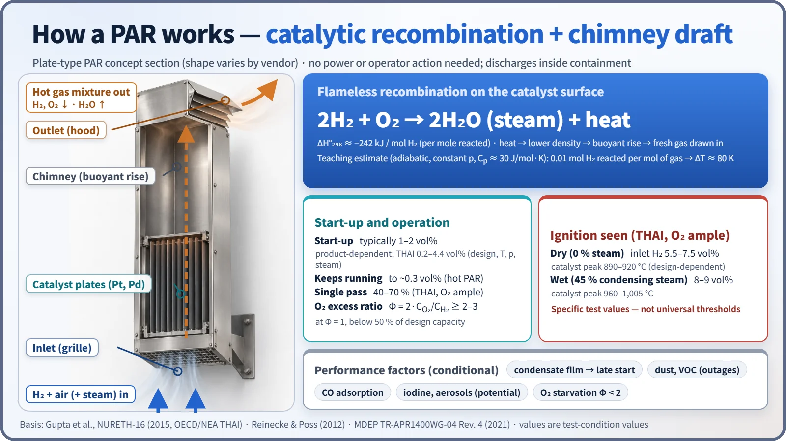
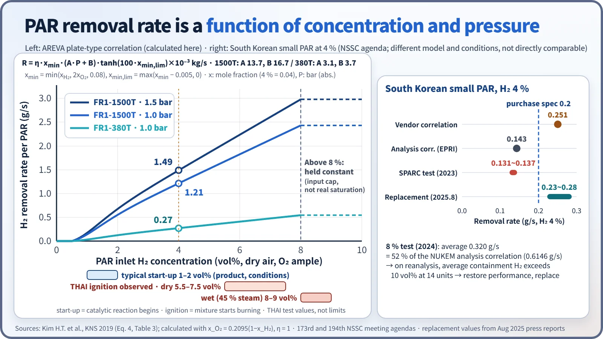
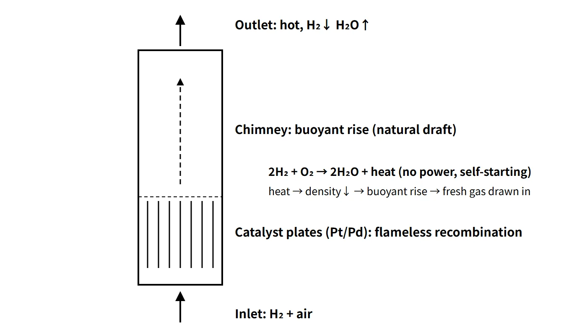

Accidents, Safety Analysis & Severe Accidents · C-SA-026
Passive Autocatalytic Recombiner (PAR) — Catalytic Principle, Removal-Rate Correlations and Ignition Risk
A passive, self-starting catalytic device whose removal rate scales with hydrogen concentration and pressure, and which can itself ignite the mixture at high concentrations.
A passive autocatalytic recombiner (PAR) is a device inside containment that recombines hydrogen and oxygen into steam without a flame on a platinum or palladium catalyst surface. It starts by itself when hydrogen reaches it, with no power, signal or operator action, and the chimney draft created by the reaction heat keeps drawing in the surrounding gas.
This entry concentrates on the PAR as a single piece of equipment.
Principle and mechanism
Catalytic recombination and the chimney effect
A commercial PAR is a vertical box open at the top and bottom. The catalyst sits at the bottom (plates: AREVA, AECL; pellets: NIS) and the upper part is an empty chimney.
- The hydrogen–air(–steam) mixture enters through the bottom inlet and touches the catalyst surface.
- The reaction 2H₂ + O₂ → 2H₂O takes place on the catalyst, releasing about 242 kJ per mole of hydrogen.
- The hot, hydrogen-depleted gas rises up the chimney and leaves at the top, and fresh gas takes its place.
Thanks to this self-feeding flow, no fan or power is needed, and the PAR works even in an SBO with both off-site and emergency power lost. The outlet flow also helps mix the containment atmosphere. The outlet gas is not pure steam but a hot mixture with less hydrogen and oxygen and more steam. If 0.01 mol of hydrogen reacts per mole of mixture, the adiabatic gas temperature rise is about 80 K (241.8 kJ/mol × 0.01 ÷ 29.5 J/mol·K, a teaching calculation with constant specific heat). The catalyst surface temperature is not derived from this value.

Start-up, shutdown and performance indicators
- Start-up: commonly given as about 1–2 vol%, but it depends on the product and conditions. In the OECD/NEA THAI tests (2007–2009) it ranged from 0.2 to 4.4 vol% depending on conditions. Dry, high-pressure, high-temperature conditions gave early start-up; steam-saturated (condensing) conditions delayed it. Once heated, a PAR keeps running down to about 0.3 vol%.
- Removal efficiency γ = (C_in − C_out)/C_in: 40–70 % (THAI, ample oxygen, depending on design). This is the concentration reduction in a single pass, not the removal efficiency for the whole containment.
- Oxygen excess ratio Φ = 2·C_O₂/C_H₂: performance is maintained at Φ ≥ 2–3; at Φ = 1 it drops below 50 % of design capacity.
Removal-rate correlations
The removal rate is almost proportional to the inlet hydrogen concentration and increases with pressure, while the effects of steam and temperature are small (THAI). Analysis codes use the vendors' empirical correlations. The AREVA (now Framatome) plate-type correlation is as follows (as summarized in a 2019 conference paper implementing it in MELCOR):
- R[kg/s] = η · x_min · (A·P + B) · tanh(100·x_min,lim) × 10⁻³
- x_min = min(x_H₂, 2x_O₂, 0.08), x_min,lim = max(x_min − 0.005, 0), P [bar], η = 1 (x_H₂ ≤ x_O₂) or 0.6
- FR1-380T: A 3.1, B 3.7; FR1-1500T: A 13.7, B 16.7
In dry air with ample oxygen, the large FR1-1500T removes about 1.21 g/s at 4 vol% and 1.0 bar, and about 1.49 g/s (5.4 kg/h) at 1.5 bar. The pressure dependence is the linear term A·P + B. The zero below 0.5 vol% and the constant value above 8 vol% are features of the model, not the actual start-up concentration or a capacity limit. The NIS correlation (Fischer 1995) has the form R ∝ x^1.307·P/T and is the default MELCOR model. A correlation gives the quasi-steady removal rate of a PAR that has already started; start-up delay and poisoning are accounted for separately. Vendor correlation values need to be verified by independent tests.

Ignition risk
As the concentration rises, the catalyst temperature rises almost linearly. In THAI tests with ample oxygen, the PAR became an ignition source for the surrounding mixture under the following conditions. These are inlet concentrations and peak catalyst temperatures from specific tests and should not be used as universal thresholds.
| Condition | Inlet hydrogen concentration | Peak catalyst temperature |
|---|---|---|
| Dry (no steam) | 5.5–7.5 vol% (design-dependent) | 890–920 °C |
| Wet (45 % condensing steam) | 8–9 vol% | 960–1,005 °C |
In the tests the flame spread upward from the PAR outlet and there was no flame acceleration. When oxygen is short (Φ < 2.2), the catalyst does not get as hot and ignition is suppressed. Conversely, if spray rapidly removes steam from a steam-inerted atmosphere, ignition can occur at high concentration. A PAR is thus a "flameless device" that can nevertheless become an unintended igniter at high concentrations.
Inhibition and poisoning
- Dust and volatile organic compounds (VOCs): accumulate on the catalyst during outages and degrade start-up performance.
- Water film (condensate): slows the initial heat-up and delays start-up.
- Iodine and aerosols: potential poisons, but in the THAI aerosol-plus-iodine tests the efficiency stayed at 50–70 % with no major loss. The PAR can instead convert part of the CsI aerosol into volatile I₂, which is a source-term issue.
- CO: produced during MCCI, and oxidized to CO₂ by the PAR. Suppression of low-temperature start-up has been suggested, but quantitative values depend on the design. CO in the mixture also increases detonation sensitivity.
What it means in a plant
Placement principles (MDEP 2021)
- Distribute PARs in proportion to the local free volume, and place them high, above hydrogen release sources.
- Arrange them so that PAR convection crosses compartment boundaries, and keep them away from walls.
- Avoid missile and pipe-whip locations, and make the catalyst inserts easy to remove for inspection.
- Choose locations from compartment-node hydrogen concentration analyses.
- Size the number not only by total capacity but with dM_H₂/dt = ṁ_generation − ΣR_PAR − other removal, looking at generation rate, start-up delay, local accumulation and unavailability together.
APR1400 configuration (example, MDEP TR-APR1400WG-04 Rev. 4)
- 30 PARs: 12 for design-basis accidents (8 large units at the top of the dome, 4 medium units at the IRWST vent stacks) + 18 for severe accidents.
- The DBA analysis credits only 6 of the 12 (200 % capacity); DBA units are safety class 3, severe-accident units are non-safety class, and all are seismic Category I.
- Catalyst performance uncertainty → the design calculation assumes a 25 % start-up failure (a different assumption from a 25 % performance reduction).
- Technical specification surveillance: 25 % of each PAR's catalyst is sampled and tested at each planned outage.
- Ten igniters back up rapid releases, and PAR-induced ignition is not currently considered in the design-basis analysis.
Regulatory and design criteria
For example, in the United States, 10 CFR 50.44(c), GDC 41–43 and RG 1.7 set the requirements for hydrogen control, monitoring and testing in new reactors. The placement principles above follow the OECD/NEA MDEP survey (2021).
Easily confused pairs
| Item | Electric recombiner | Hydrogen igniter | PAR |
|---|---|---|---|
| Operation | Manual start by operators, needs power | Energized early per procedure, needs power | Passive, automatic when hydrogen arrives |
| Principle | Thermal recombination by electric heating | Continuous burning at low concentration | Flameless catalytic recombination |
| Location | Inside or outside containment (piped recirculation) | Near release sources | Inside containment, above sources and in the dome, in proportion to volume |
| Strength | Flameless | Fast removal | No power or action needed, promotes mixing |
| Weakness | Small capacity | Useless if power is lost; late ignition increases loads | Finite removal rate, ignition source at high concentration, poisoning and oxygen starvation |
"A recombiner sends hydrogen out of containment" is wrong. It turns hydrogen into steam inside containment.
Key points at a glance
- Definition: flameless recombination H₂ + ½O₂ → H₂O on a Pt/Pd catalyst; passive equipment needing no power or operator action.
- Principle: catalytic reaction heat (242 kJ/mol H₂) → chimney natural draft → self-feeding, promotes mixing.
- Start-up: typically about 1–2 vol% (0.2–4.4 % depending on conditions); keeps running to about 0.3 %.
- Performance: removal rate ∝ hydrogen concentration and pressure (AREVA correlation); efficiency 40–70 %; Φ ≥ 2 needed.
- Ignition risk: catalyst can become an ignition source at 5.5–7.5 % (dry) or 8–9 % (wet).
- Inhibition: dust and VOCs, water film, iodine and aerosols, CO, oxygen starvation.
- Placement: in proportion to free volume, high above release sources, convection between compartments.
- APR1400: 30 PARs (12 DBA + 18 severe accident), 25 % start-up failure assumed, backed up by 10 igniters.
